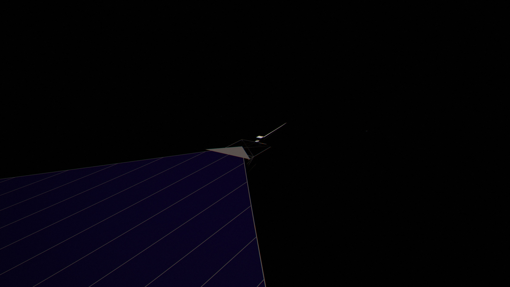

The compute sail
Every satellite in the swarm is the same thing: a square of solar film 279 metres on a side, thinner than paper, with a hundred million small chips printed on its back. It is a power plant, a radiator and a computer in one sheet.
In short
- One sheet does everything. The film catches sunlight, turns about a sixth of it into electricity, spends that electricity in chiplets of 0.15 W spread every 2.5 cm across its back, and radiates all the heat from its own surface. There are no pipes, pumps or radiators.
- The chips decide where it flies. The film’s temperature is set by sunlight alone, and the chips must stay near 85 °C, so a lone sail flies at 0.862 AU. In the finished sphere every sail sits at 0.95 AU and runs much hotter, because the sails face each other instead of space.
- 279 m is a compromise. The largest model the film is meant to train must fit on one sheet as one unbroken mesh, the fixed hardware must be a small share of the mass, and the folded sail must fit one launch package.
- It lasts centuries with repair. Meteoroids punch holes that do not grow, sunlight anneals radiation damage at the film’s temperature, and chip wiring can be cut short enough not to wear out. The model rebuilds each sail every 300 years and recycles 99% of it.

What one sail is
A sail is a square of film 279 metres on a side, flown corner-first like a diamond, so that it measures 395 metres from tip to tip. Its front faces the Sun. Behind it, four booms run from a small hub at the centre out to the four corners and hold the film taut. Four small mirror vanes at the corners steer it. That is all: no box of electronics, no fluid, no moving parts beyond the vanes’ gimbals and the flywheel described below.
The film itself is a crystalline silicon solar cell under a thin cover glass. On its back, one chiplet sits in the middle of every 25 mm tile of cell. Each chiplet takes the 0.15 W its own tile makes, computes with it, and turns it into heat right where the heat is made. Because the chips are spread as thinly as the sunlight that feeds them, the film’s own back is all the radiator they need.
Sails never touch. While the swarm is sparse they are kilometres apart; in the finished sphere they fly side by side in bands tens of thousands of kilometres wide, but each is still a separate spacecraft with only laser links to its neighbours. They treat each other the way computers in different buildings do: closely enough to share work, not closely enough to act as one machine. Inside a sail, light guided through the film links every chiplet to every other within a couple of microseconds, so one sail is one computer.
Why 279 metres
The size comes from three pulls that point in different directions.
- The largest job must fit on one sheet. The design study sized the sail so that the biggest model it is meant to train, about 10⁸ chiplets, is one contiguous mesh: 1.03×10⁸ sites including 3% spares. Between sails, links are a thousand times slower than within one, so a model split across two sails runs at the speed of the gap.
- Fixed hardware must be a small share. The hub, vanes and tensioners weigh about the same whatever the sail’s size, roughly a third of a tonne. On an 82 m sail, a tenth of the area, that would be a fifth of the mass; at 279 m it is 2.4%.
- It must fit one launch. Folded and rolled, the reference sail is a package of 14.4 tonnes, 7.7 × 3.4 × 2.1 metres, sized for one shot of a mass driver at 100 g.
| Chiplets | Side | Mass | Power | Fixed mass | Umbra |
|---|---|---|---|---|---|
| 10⁷ | 82 m | 1.9 t | 1.5 MW | 19% | 8 km |
| 3×10⁷ | 142 m | 5.0 t | 4.5 MW | 7.4% | 14 km |
| 10⁸ (the design) | 260 m | 15.6 t | 15 MW | 2.4% | 26 km |
| 3×10⁸ | 450 m | 46 t | 45 MW | 0.8% | 45 km |
| 10⁹ | 822 m | 152 t | 150 MW | 0.2% | 81 km |
Above 279 m the fixed mass is already negligible and nothing more is gained, while the package grows past what one launch carries and the shadow behind each sail lengthens, which constrains how closely bands can fly. Later hardware with denser memory could fit one training replica on a 62 m sail, but the other two pulls keep the optimum near 279 m, so each sail simply holds several replicas (Hardware after 2095).
The film, layer by layer
From the Sun inward, the film is an anti-reflection coating, a cover glass, the silicon absorber with all its contacts on the back, a thin dielectric, a magnesium heat spreader, an enamel that radiates in the infrared, and the chiplets. Every layer is made from elements Mercury has in bulk.
| Layer | What it does | 2026 reference | Mature era |
|---|---|---|---|
| Porous silica and TiO₂ anti-reflection, 55–110 nm | Lets light into the glass and the silicon | 0.3 g/m² | 0.3 g/m² |
| Cover glass, SiO₂-rich Mg-aluminosilicate | Stops solar protons; expands like silicon | 20 µm, 50 g/m² | 8 µm, ~20 g/m² |
| Crystalline silicon absorber, textured, back-contacted | The solar cell | 30 µm, 70 g/m² | 10 µm, light-trapped, ~23 g/m² |
| Rear aluminium contacts and tile wiring | Collects current with nothing on the front | 4 g/m² | 4 g/m² |
| Rear dielectric, 0.5 µm SiO₂ | Insulates the cell from the spreader | 1.1 g/m² | 1.1 g/m² |
| Magnesium spreader, 13 µm, patterned per tile | Carries each chip’s heat a few centimetres | 22.6 g/m² | 22.6 g/m² |
| Back emitter enamel, Fe/Mg/Ca silicate, microtextured | Radiates the heat (ε ≈ 0.9) | 15 µm, 40.5 g/m² | 6 µm, ~16 g/m² |
| Chiplets and their mesh wiring | The computer | 2 g/m² | 2 g/m² |
| Film | 191 g/m² | 89 g/m² |
The cell
Silicon is the only solar cell Mercury can make at this scale. Perovskite cells need iodine and III-V cells need indium and germanium; Mercury holds enough of those for a swarm catching a hundred-thousandth of the Sun at most. A silicon cell made without hydrogen, as it must be on a planet with almost none, is expected to reach 21–22% under sunlight in space, against a theoretical limit near 30%. The model takes 21.5%, less 5% for the thinner absorber, losing 0.34% of its output for every kelvin above 28 °C.
All the contacts are on the back (an interdigitated back-contact cell), so nothing on the front shades it and the front is a single dark surface. Each 25 mm tile is two half-cells in series, giving about 1 volt; nothing on the production film ever sees more than 1.17 V, which matters because solar arrays in space arc when a meteoroid strikes a string held at 80 volts or more. A switched-capacitor converter on each chiplet steps the tile’s volt down to the half volt its logic runs on, at 93% efficiency, and tracks the cell’s maximum power point.
One trick earns a lot. About a quarter of sunlight lies at wavelengths longer than silicon can use. Absorbed, it only heats the film. A cover-glass coating that reflects it lowers the film’s absorptance from 0.90 to 0.80, and the sail can fly closer to the Sun for the same temperature: 0.86 AU instead of 0.92, with 14% more sunlight per square metre.
What it looks like
The front reflects about 0.2% of visible light, almost all of it from the anti-reflection coating, which leaves a faint magenta-blue residual. To the eye the film is a very dark navy. The 25 mm hinge strips, every 1.63 m, are a slightly lighter satin; individual tiles show only from a few metres away. A sail far away is a dark diamond whose only bright feature is the mirror vanes.


The chiplets on the back
Each chiplet is a die about 2.5 mm square and 50 µm thick, bonded to the back of the film at the centre of its tile. It draws 0.15 W. That figure is chosen, not given: a thin sheet carries heat sideways so poorly that the metal needed to spread a chip’s heat grows with the square of its power. At 0.1 W per chip the spreader costs 0.09 g per watt; at 1 W, 0.94 g/W; at 10 W, 9.4 g/W, more than the whole rest of the sail. At 0.15 W the die runs only 7–10 K above the film around it, and the film’s silicon absorber carries about two thirds of the heat.
The spacing follows from the power. A square metre of film on the sail’s own orbit delivers about 260 W to its chips, so one 0.15 W chiplet fits every 24 mm. At 0.95 AU, where the sphere is built, sunlight is weaker and the pitch opens to 26.5 mm. A sail there carries about 10⁸ chiplets and 15 MW of chips.
The chiplets are wired to their four neighbours through the rear metal layer, crossing the hinge strips on flexible jumpers. With 2026 parts that electrical mesh is the only network, and a bit crossing the whole sail costs 220–1,465 pJ. The mature design adds optical lanes, light guided in the film between chiplets, which bring that to 0.03–2 pJ and let a signal cross the sail in about two microseconds. That is what makes one sail one machine.
Memory moves onto the chiplets themselves. Today’s design would hold a chiplet’s working data in 16 MB of SRAM, which leaks badly when hot. The mature design stacks 1–2 GB of non-volatile memory (resistive, magnetic or ferroelectric) on each chiplet. It draws nothing when idle, shrugs off the radiation an unshielded film collects, and survives brownouts. Chips in the film explains what such a mesh can and cannot compute.


Temperature, and where a sail can fly
A sail in sunlight settles where the heat it radiates from both faces equals the sunlight it absorbs:
α S = (εfront + εback) σ T⁴
Here α = 0.80 is the share of sunlight absorbed, S the sunlight per square metre, and the emissivities are 0.85 for the glass front and 0.90 for the enamel back. Notice what is missing: the efficiency of the cells. The electricity they make is spent in chips in the same sheet and leaves as heat from the same surface, so a better cell makes more computing at the same temperature. Only the absorbed sunlight sets the temperature, and with it the distance.
The chips are held near 85 °C, where logic is most efficient per joule (Hardware after 2095). With the chips 9 K above the film, that puts the film at 349 K and a lone sail at 0.862 AU, in 1,832 W/m² of sunlight. Closer in, the chips would overheat; farther out, the same film would catch less.
sailAt, closedFilmT). Hover for values.In the sphere, every sail flies at 0.95 AU, not at its own best distance, for reasons that have to do with Earth and with how much of Mercury there is (Closing the sphere). While the sphere is sparse, each sail’s front is switched to a low infrared emissivity, 0.1, the way spacecraft radiators can be today, so Earth does not see warm fronts through the gaps; the film then runs at 382 K and the chips at about 118 °C. As the sphere closes, the fronts face other fronts across the cavity instead of space, and all of the Sun’s power has to leave through the backs. The film reaches 419 K and the chips about 155 °C. Hot cells convert less and hot logic spends more per operation, so each watt of sunlight computes about half what it would at 85 °C. That is the price of enclosing the Sun, and the sphere note explains why it is paid.
Holding it flat
The film is held at a tension of only 0.1 N per metre, about the weight of a paperclip per metre of edge. That is enough. The only steady load is sunlight, which pushes on the whole sail with about a third of a newton, and the membrane, stressed at 1.25 kPa, bows by less than two hundredths of a degree under it.
Four booms carry the tension to the hub. Each is a triangular truss 199 m long and 2.6 m across, built from thin magnesium-alloy tubes 16 mm across with iron-nickel wire diagonals, and weighs 109 kg. It carries a compressive load of 141 N with a safety factor of three. The booms sit 0.3 m behind the film, which touches them nowhere; constant-force spring reels at the corners take up any slack, and two redundant tethers run to each corner. The edges between corners hang as shallow curves (11 m of sag in 279 m), so the tension spreads evenly and no edge flutters.
Why the sail does not spin
Solar sails are often spun so that rotation keeps them flat. The study rejected it. The torque a sail’s vanes can supply to precess a spinning disc limits the spin period to 45 minutes or longer, and at that rate rotation gives only 0.6–10 mN/m of tension. The film’s edges would then bend over 1–3 m, so its 1.63 m fold panels would curl. A static frame with booms and tensioners holds the film flat at a fraction of the cost.
The hardest flatness problem is inside the film. The magnesium spreader expands differently from the silicon, so any temperature change curls the free edges of each fold panel. The film is laminated stress-free at its working temperature, which keeps the curl at the hinge lines below 3.7°. The tilted edges cover about a fifth of the film and cost less than 0.2% of its power.
| Part | What it is | Mass |
|---|---|---|
| Booms, four | 199 m triangular magnesium trusses, 76 bays | 437 kg |
| Hub | 3.4 m octagonal prism: boom deployers, avionics, star trackers, beacon | 250 kg |
| Hinge strips, 243 | 25 mm dark-enamelled glass cloth with aluminium jumpers | 67 kg |
| Corner vanes, four | 9.3 m squares of aluminium-coated glass cloth on gimbals | 65 kg |
| Tensioners, doublers, sensors | Spring reels, corner reinforcement, sun sensors | 27 kg |
| Edge cables and tape | 1.2 mm iron-nickel wire in a glass-cloth hem | 13 kg |
| Structure | 6% of the reference sail | 859 kg |
Pointing and steering
A sail must face the Sun to within a fraction of a degree, and from time to time turn edge-on to it. Small asymmetries in the film’s reflectance, 1% from one side to the other, would twist it with about 0.12 N·m. The four corner vanes, each 87 m² of aluminium-coated cloth on a two-axis gimbal 6.7 m beyond the film’s tip, can push back with 0.35 N·m on every axis, three times the largest disturbance. They steer by tilting, which moves the point where sunlight pushes; no propellant is used.
The same push moves the sail’s orbit. Sunlight carries about a third of a percent of the reference sail’s weight, and more of a thinned sail’s. Tilting the whole sail tilts that push, and over months it reshapes the orbit. That is how the sails of a band hold formation: each tilts 3–4°, which costs 0.2% of its light, to stay up to 35,000 km off the great circle its band follows round the Sun (Closing the sphere).
Turning edge-on is a different matter. In the sphere, a sail that passes behind another, or through a window cut for Earth, turns edge-on so that it neither blocks light nor traps the lit sail’s heat. Vanes are too slow for that, and sunlight stops pushing once a sail is edge-on. So each sail carries a flywheel run from its own film. Spinning the wheel up turns the sail the other way; a ten-minute flip of the 14-tonne reference sail needs a wheel of about 200 kg, and the wheel ends at the speed it started with. Sunlight on the vanes unloads any slow drift. The mirror sails in front of Earth do the same with 50 kg wheels, and their flips are animated on the main page.
Links
The reference sail carries 60 laser terminals on the back of the film, one for each 32.5 m patch, each a 10 cm telescope on a two-axis gimbal at the top of a 0.6 m mast, with four more at the boom tips that see past the film’s edge. They are Starlink-class: 0.1–0.4 Tbps to anything within 3,000 km. Each draws 60–80 W from its own square metre of film wired as a 24 V string, well under the 80 V at which arcs start.
Mature hardware needs fewer and better terminals: about twelve per sail, eight of 10 cm and four of 30 cm, at 50–400 Tbps each. Inside the sail the optical lanes in the film carry everything; the terminals are only for traffic between sails, to the mirror cap’s laser stations, and to the few concentrated pods.
The gaps between sails set what the swarm can do as a whole. The laser links between sails carry far less than the film carries inside one, and it is that bandwidth, more than the light-time, that stops tensor parallelism, splitting one layer of a model across chips, at the edge of a sail. Sails cooperate the way data centres do now, by exchanging results and averaged updates, not by acting as one chip.
Folding, launch and deployment
The laminate can be rolled but never creased: rolled to a radius of 34 mm or more, no layer strains more than 0.1%. All the folding happens in the hinge strips. The film is folded like an accordion along its 243 hinge lines into a strip 1.63 m wide and 395 m long, 242 layers thick at the middle, then rolled from both tips toward the centre into two rolls 2.2 m across. With the hub between them, the package measures 7.7 × 3.4 × 2.1 m and weighs 14.4 tonnes.
It leaves the factory, on Mercury at first and in orbit later, on a mass driver at 100 g, and a small electric kick stage running on oxygen takes it to its orbit. Deployment then runs in five steps:
- The kick stage circularises the orbit and separates.
- The two booms along the fold extend, carrying the rolls outward, which pay out under a brake.
- The other two booms extend; their tips pull the outermost accordion panels out to the remaining corners, and the panels unfold.
- The tensioners take up the slack to 0.1 N/m, the vanes unfurl on their own small booms, and the terminals rise on their masts.
- The vanes point the sail at the Sun, the chiplets test themselves, and the film’s network starts up region by region.
Damage, wear and repair
At 0.92 AU interplanetary dust strikes at about 21 km/s. Almost every grain makes a small hole, and the film is far too thin to stop any of them. What saves it is that holes do not grow. At the film’s low stress, a crack would have to be about a hundred kilometres long before it could spread on its own, and the hinge strips stop tears from handling. A hit kills at most the tile it lands on, a single 0.15 W chiplet and its cell.
| Hole | Particle | Per m² per year | Per sail per year |
|---|---|---|---|
| 0.1 mm | 50 µm | 3.9 | 264,000 |
| 0.3 mm | 150 µm | 0.2 | 13,700 |
| 1 mm | 0.5 mm | 0.0033 | 224 |
| 3 mm | 1.5 mm | 5×10⁻⁵ | 3.5 |
| 1 cm | 5 mm | 5×10⁻⁷ | one every 33 years |
The film loses about 0.13% of its chiplets a year, depending on how far the damage around each hole reaches (0.02–1.2%). The sail carries 10% spare area, so even the worst case leaves it working for years, and repair craft patch it in place.
How long a sail lasts was first set by 2026 designs, which give 10–30 years. The closed swarm asks what physics allows when repair is part of the design, and the answer is centuries.
| Wear | Rate | What stops it |
|---|---|---|
| Solar wind sputtering the cover glass | About 0.02 nm a year | Nothing needs to: 8 µm of glass lasts about 400,000 years |
| Proton damage in the cells | 7.5% of output a decade behind 20 µm of glass, more behind 8 µm | At 146 °C the film anneals the commonest defects continuously; the rest anneal at 250–350 °C, which a patch reaches for an hour when the sail drives current through it |
| Electromigration in chip wiring | 25× faster at 155 °C than at 105 °C: a chip built as today’s would last under two years | Wires cut into segments shorter than the Blech length, where back-stress stops the drift altogether; it costs routing density, not lifetime |
| Radiation dose in memory | 133–437 krad a decade, unshielded | Resistive memory survives 10–20 Mrad, centuries of dose; data is scrubbed continuously |
| Meteoroid holes | 0.007–1.2% of the area a year, depending on crack arrest | Crack-stopped film keeps to the low end, about 2% in 300 years, patched in place |
| Obsolescence | Worth replacing while chips improve faster than recycling loses material | By the time the sphere closes, chips have long reached their practical floor |
So the model rebuilds each sail every 300 years and recycles 99% of it in orbit. Between rebuilds, depot craft anneal, patch and swap chiplets. The rebuild is for the slow damage that repair in place cannot reach: clusters of displaced atoms, grain growth, accumulated patches. Pessimistic hardware gets 50 years and 95% recycling, optimistic 1,000 years and 99.5%, and today’s hardware 10 years and 90%. How much that matters for the size of the swarm is in Taking Mercury apart.
The mass ledger
| 2026 reference | Mature era | |
|---|---|---|
| Film | 13,250 kg | 7,050 kg |
| Spare area and structure | 859 kg structure | +10%: 705 kg |
| Laser terminals | 320 kg | ~80 kg |
| Sail | 14.4 t | 7.8 t |
| Chip power | 14.8 MW | 18.1 MW |
| Mass per watt of chips | 0.98 g/W | 0.43 g/W |
Most of the gain comes from the thinner film; the rest from a sail that flies closer to the Sun and converts more of what it catches, 260 W of chips per square metre against 213. The sail itself is only part of the swarm’s mass. Pods add more per watt (Chips in the film); in the sphere the film sits at 0.95 AU rather than 0.862, so each watt needs 21% more of it; and once orbits begin to cross, some sails are always idle behind others. The finished swarm weighs 1.0 g per watt of chips, 5.67×10²² kg in all.
Sources and code
- Design study:
docs/data/design_spec.json, with its scripts indocs/data/design_scripts/(structure, optics, layout, clustering, sensitivity). - Architecture studies:
docs/architecture.md,docs/data/architecture_thermal_mass.json,docs/data/architecture_skeptic.json. - Future hardware:
docs/future-tech.mdanddocs/data/future/*.json; lifetimes:docs/closed-swarm.mdanddocs/full-swarm.md. - Model:
src/model/hybrid.js(sailAt,closedFilmT,closedFactor), tested intest/hybrid.test.js. - Grün, Zook, Fechtig and Giese (1985), the interplanetary meteoroid flux; SPENVIS ballistic-limit equations.
- JAXA and NASA Glenn measurements of impact-induced arcing on solar arrays (sustained arcs at 80–183 V).
- Thin crystalline silicon efficiency against thickness: arXiv:1505.03985. LONGi’s 27.81% silicon cell (2025).
- Miller, “Attojoule optoelectronics”, J. Lightwave Technology 35(3), 2017, arXiv:1609.05510.
- Blech (1976), electromigration threshold in short conductors.